Les opérateurs et les expressions en PHP
Les opérateurs en PHP sont des symboles ou des mots réservés utilisés pour effectuer des
opérations sur les variables et les valeurs. Les opérateurs couramment utilisés en PHP
comprennent les opérateurs arithmétiques tels que :
- l'addition (+)
- la soustraction (-)
- la multiplication (*)
- la division (/)
L'opérateur d'affectation "=" est utilisé pour assigner une valeur à une variable.
L'opérateur de concaténation de chaînes "." est utilisé pour joindre deux
chaînes de caractères.
En plus des opérateurs arithmétiques et d'affectation, PHP offre également des opérateurs de
comparaison tels que "==" pour vérifier l'égalité entre deux valeurs et "!=" pour vérifier la
non-égalité. Les opérateurs de comparaison sont souvent utilisés dans des structures de contrôle
telles que les instructions "if" et "while". D'autres opérateurs de comparaison
incluent :
- inférieur à (<)
- supérieur à (>)
- inférieur ou égal à (<=)
- supérieur ou égal à (>=)
En PHP, les expressions sont utilisées pour combiner des valeurs et des opérateurs pour
former une instruction complète. Par exemple, l'expression "$total = $prix *
$quantite;" multiplie le prix et la quantité pour calculer le total et assigne le résultat à la
variable "$total". Les expressions peuvent être simples ou complexes et peuvent inclure des
parenthèses pour définir l'ordre d'exécution.
Il est important de noter que les opérateurs ont des priorités d'évaluation qui déterminent l'ordre
dans lequel les opérations sont effectuées. Par exemple, les opérateurs arithmétiques ont une
priorité plus élevée que les opérateurs de comparaison. Il est donc important de comprendre les
priorités d'évaluation des opérateurs pour éviter des erreurs de calcul.
En résumé, les opérateurs en PHP sont utilisés pour effectuer des opérations sur les variables et les
valeurs, y compris les opérateurs arithmétiques, d'affectation et de comparaison. Les expressions
sont utilisées pour combiner des valeurs et des opérateurs pour former des instructions complètes.
La compréhension des opérateurs et des expressions est essentielle pour la création de scripts PHP
efficaces et fonctionnels.
Les structures de contrôle en PHP
Les structures de contrôle en PHP sont utilisées pour définir l'ordre d'exécution des instructions en
fonction de certaines conditions. Il existe trois types de structures de contrôle couramment
utilisées en PHP : les instructions conditionnelles, les boucles et les instructions de saut.
Les instructions conditionnelles sont utilisées pour exécuter une
instruction ou un ensemble
d'instructions uniquement si une condition est remplie. La structure la plus courante est
l'instruction "if", qui teste une expression et exécute les instructions contenues
dans le bloc "if"
uniquement si l'expression est vraie.
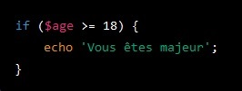
Dans cet exemple, le message "Vous êtes majeur" s'affichera si la variable
$age est supérieure ou égale à 18.
Il existe également des instructions conditionnelles plus complexes, telles que
"else" pour exécuter
un bloc d'instructions si l'expression dans "if" est fausse :
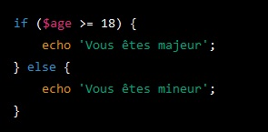
Ici, le message "Vous êtes majeur" s'affichera si la variable $age est
supérieure ou égale à 18, si non le message "Vous êtes mineur" apparaîtra
et "elseif" pour tester une condition supplémentaire si l'expression dans "if" est
fausse.
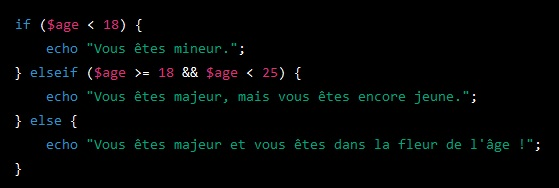
La première condition teste si la variable $age est inférieure à 18. Si
c'est le cas, le message "Vous êtes mineur." est affiché et l'execution du script s'arrête.
sinon la deuxième condition teste si la variable $age est supérieure ou égale à 18 et inférieure
à 25. Si c'est le cas, le message "Vous êtes majeur, mais vous êtes encore jeune." est affiché
et l'execution du script s'arrête. Sinon la troisième condition utilise le mot-clé "else" pour
spécifier que si aucune des conditions précédentes n'est vraie, le message "Vous êtes majeur et
vous êtes dans la fleur de l'âge !" doit être affiché.
Les boucles en PHP permettent de répéter une instruction ou un
ensemble d'instructions plusieurs fois
en fonction d'une condition.
La boucle "while" exécute les instructions contenues
dans le bloc tant que l'expression est vraie.
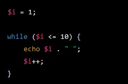
Dans cet exemple, nous initialisons la variable "$i" à 1. Nous utilisons
ensuite une boucle "while" pour exécuter le code contenu dans la boucle tant que la condition
spécifiée est vraie.
Dans ce cas, la condition est "$i <= 10", ce qui signifie que la boucle continuera à s'exécuter
tant que la valeur de "$i" est inférieure ou égale à 10. À chaque itération de la boucle,
nous affichons la valeur de "$i" suivie d'un espace en utilisant la fonction "echo" . Nous
incrémentons également la valeur de "$i" de 1 à chaque itération à l'aide de l'opérateur
d'incrémentation "++" . Lorsque la valeur de "$i" atteint 11, la condition "$i <= 10" n'est
plus vraie et la boucle se termine.
La boucle "Do...While" est une structure de contrôle qui permet d'exécuter un bloc
de code au moins une fois, puis de continuer à l'exécuter tant qu'une condition spécifiée est vraie.
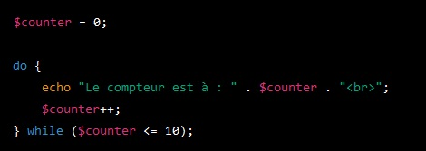
Cette boucle va afficher "Le compteur est à : 0", "Le compteur est à : 1",
"Le compteur est à : 2" ... jusqu'à ce que le compteur atteigne la valeur 10. Le bloc de code à
l'intérieur de la boucle sera exécuté au moins une fois, même si la condition de la boucle est
fausse dès le départ.
La boucle "for" est une autre boucle couramment utilisée en PHP, qui utilise un
compteur pour déterminer combien de fois les instructions doivent être répétées.
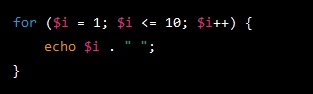
Dans cet exemple, nous utilisons une boucle "for" pour exécuter le code
contenu dans la boucle un nombre spécifié de fois. La boucle "for" est souvent utilisée
lorsque
le nombre d'itérations est connu à l'avance. Dans la déclaration de la boucle "for", nous
avons
trois parties :
- La première partie ($i = 1) initialise la variable d'itération "$i" à 1.
- La deuxième partie ($i <= 10) spécifie la condition de continuation de la boucle. La
boucle continue à s'exécuter tant que la valeur de "$i" est inférieure ou égale à
10.
- La troisième partie ($i++) est exécutée à chaque itération de la boucle. Dans ce cas,
nous
incrémentons la valeur de "$i" de 1 à chaque itération.
À chaque itération de la boucle, nous affichons la valeur de "$i" suivie d'un espace en
utilisant la
fonction "echo". Lorsque la valeur de "$i" atteint 11, la condition "$i <= 10" n'est plus
vraie et la boucle se termine.
La boucle "foreach" permet de parcourir facilement les éléments d'un tableau et
d'exécuter une instruction pour chaque élément.
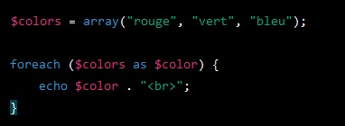
Dans cet exemple, nous avons un tableau contenant trois couleurs. La boucle foreach parcourt
chaque élément du tableau et stocke sa valeur dans la variable $color. Le code à l'intérieur
de la boucle affiche chaque couleur sur une ligne séparée à l'aide de la fonction echo(). Le
résultat affiché sera :
Les instructions de saut en PHP permettent de sauter des parties
spécifiques d'un programme en fonction de certaines conditions. Les instructions de saut les plus
courantes en PHP sont "break" et "continue".
L'instruction "break" est utilisée pour interrompre une boucle, telle qu'une boucle
"for" ou "while", lorsqu'une condition spécifiée est atteinte. Lorsque "break" est exécuté, la
boucle est interrompue et l'exécution du programme se poursuit à l'instruction suivante après la
boucle.
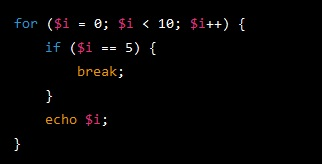
Dans cet exemple, la boucle "for" est interrompue lorsque la valeur de la
variable $i atteint 5. Lorsque "break" est exécuté, la boucle s'arrête et l'exécution du
programme se poursuit à l'instruction suivante après la boucle.
L'instruction "continue", quant à elle, est utilisée pour passer à l'itération
suivante d'une boucle lorsque certaines conditions sont remplies. Lorsque "continue" est exécuté, le
reste du code contenu dans la boucle n'est pas exécuté pour l'itération actuelle, et la boucle passe
à l'itération suivante.
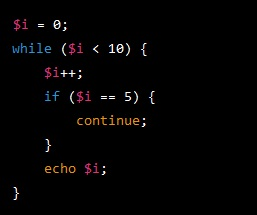
Dans cet exemple, la boucle "while" est utilisée pour afficher les valeurs
de $i de 1 à 10. Lorsque la valeur de $i atteint 5, l'instruction "continue" est exécutée, ce
qui permet de passer directement à l'itération suivante de la boucle, sans afficher la valeur de
$i égale à 5.
Les fonctions et procédures en PHP
En PHP, les fonctions et les procédures sont des éléments fondamentaux du langage de programmation.
Une fonction est une section de code qui effectue une tâche spécifique et renvoie une valeur en
sortie, tandis qu'une procédure est une section de code qui effectue également une tâche spécifique,
mais sans renvoyer de valeur. Les fonctions et les procédures sont définies à l'aide du mot-clé
"function" suivi du nom de la fonction ou de la procédure, des paramètres éventuels entre
parenthèses, puis du corps de la fonction ou de la procédure entre accolades. Les fonctions et les
procédures peuvent être appelées depuis d'autres parties du code à l'aide de leur nom, et les
valeurs renvoyées par les fonctions peuvent être stockées dans des variables ou utilisées
directement dans le reste du code. PHP dispose également d'un grand nombre de fonctions prédéfinies
pour des tâches courantes, telles que la manipulation de chaînes de caractères, la gestion des dates
et heures, l'interaction avec les fichiers, et bien plus encore.
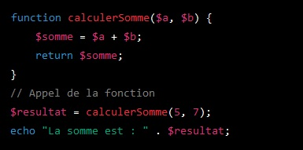
Dans cet exemple, la fonction 'calculerSomme' prend deux paramètres $a et
$b, additionne ces deux
paramètres, stocke le résultat dans la variable $somme et renvoie cette variable en sortie. La
fonction est appelée plus tard avec les valeurs 5 et 7 en tant que paramètres, et le résultat
est stocké dans la variable $resultat avant d'être affiché à l'écran.
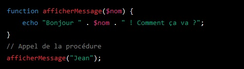
La procédure 'afficherMessage' prend un paramètre $nom, construit une chaîne
de caractères avec ce paramètre et affiche cette chaîne à l'écran à l'aide de la fonction echo.
La procédure est appelée avec le paramètre "Jean", ce qui affiche le message "Bonjour Jean !
Comment ça va ?" à l'écran. Notez que la procédure ne renvoie pas de valeur en sortie.
Les tableaux et les matrices en PHP
En PHP, les tableaux et les matrices sont des structures de données qui permettent de stocker et de
manipuler des collections de valeurs. Un tableau est une structure de données linéaire qui peut
contenir un nombre quelconque d'éléments de tout type de données, tandis qu'une matrice est une
structure de données rectangulaire qui contient des éléments organisés en lignes et en colonnes.
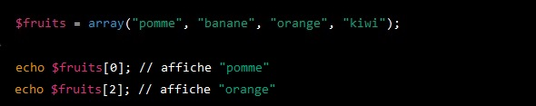
Ici nous avons créé un tableau appelé $fruits, contenant quatre éléments de
type chaîne de caractères. Chaque élément représente un fruit différent : "pomme", "banane",
"orange" et "kiwi". Pour afficher un élément spécifique du tableau, nous utilisons la structure
de langage 'echo' suivie de l'indice numérique de l'élément. L'indice du premier élement d'un
tableau est toujours 0.
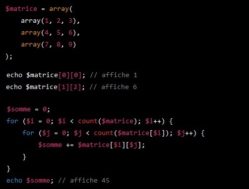
Nous avons créé une matrice de 3 lignes et 3 colonnes, où chaque élément est
un nombre entier. Chaque sous-tableau imbriqué dans le tableau principal représente une ligne de
la matrice. Nous pouvons accéder aux éléments de la matrice en utilisant 'echo' et en précisant
entre crochets leur indice numérique de ligne et de colonne.
Nous pouvons également parcourir la matrice à l'aide de boucles, par exemple pour calculer la
somme des éléments de la matrice. Cette boucle utilise une structure de boucle imbriquée for
pour parcourir tous les éléments de la matrice. La variable $i est utilisée pour parcourir les
lignes de la matrice, tandis que la variable $j est utilisée pour parcourir les colonnes de
chaque ligne.
La première boucle for utilise la fonction count pour obtenir le nombre de lignes de la matrice,
et parcourt chaque ligne en incrémentant la variable $i à chaque itération.
La deuxième boucle for utilise la même fonction count, mais cette fois-ci sur le sous-tableau
qui représente une ligne de la matrice. Elle parcourt chaque colonne de la ligne actuelle en
incrémentant la variable $j à chaque itération.
À chaque itération de la boucle interne, la valeur de l'élément actuel de la matrice est ajoutée
à une variable $somme. À la fin de la boucle, la variable $somme contient la somme de tous les
éléments de la matrice.